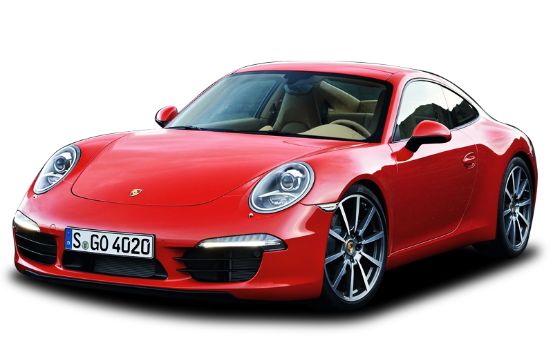
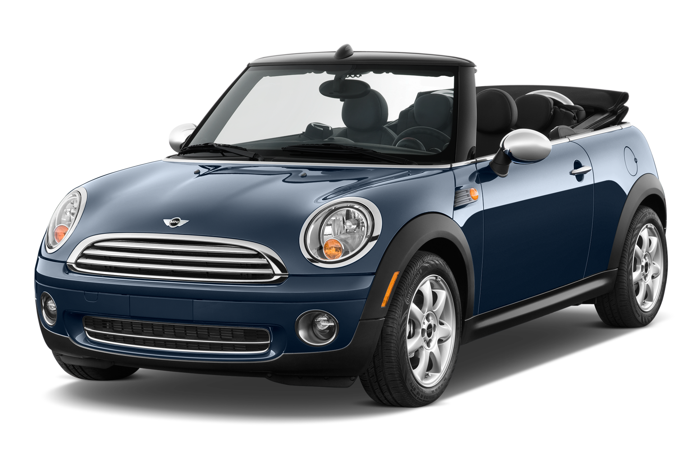

| Porsche | |
|---|---|
 More Images |
The Porsche 911 (pronounced Nine Eleven or German: Neunelfer) is a two-door, 2+2 high performance classic German sports cars made since 1963[1] by Porsche AG of Stuttgart, Germany. It has a rear-mounted six cylinder boxer engine and all round independent suspension. It has undergone continuous development, though the basic concept has remained little changed. The engines were air-cooled until the introduction of the Type 996 in 1998, with Porsche's "993" series, produced in model years 1994–1998, being the last of the air-cooled Porsches. |
| Mini Cooper | |
 More Images |
Mini Cooper may refer to:The Mini (marque), which includes a number of different models produced by BMW since 2000. A number of different models have cars with the "Mini Cooper" title, including the Mini Hatch, the Mini Clubman, the Mini Countryman, the Mini Coupé, the Mini Roadster, and the Mini Paceman A Mini model called the "Mini Cooper" was made by the British Motor Corporation from 1961 to 1971, then from 1990 to 2000. John Cooper, owner of the Cooper Car Company , saw the potential of the original Mini for competition, and worked with Issigonis, the designer of the original Mini. |